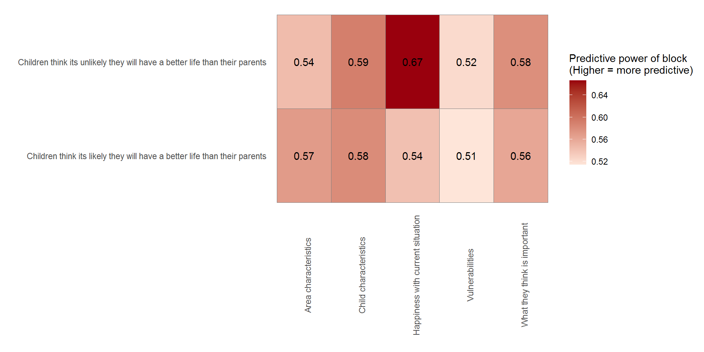
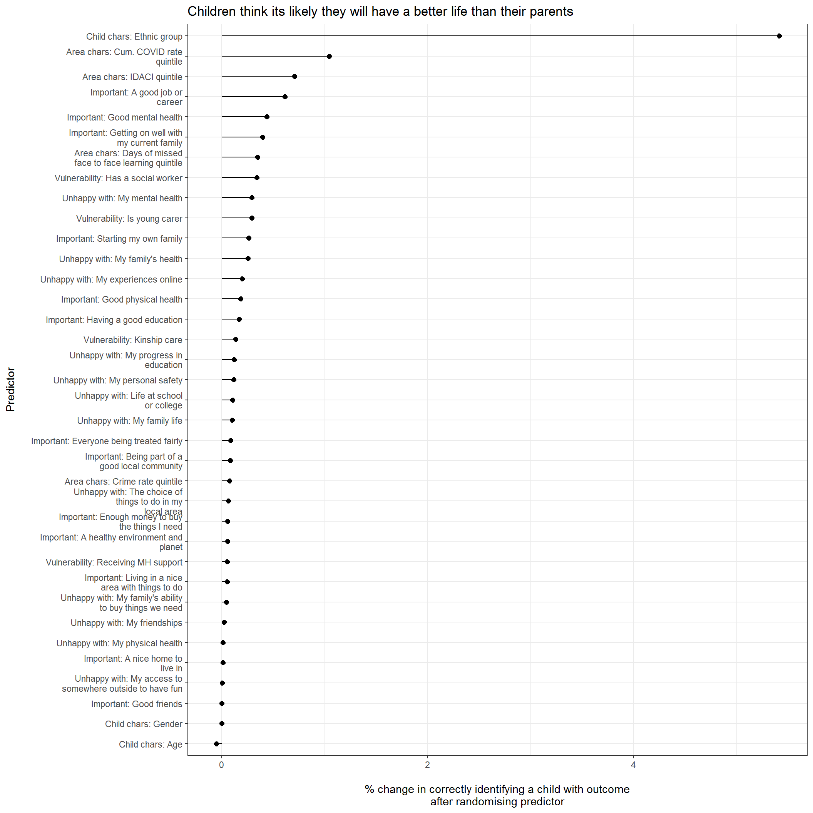
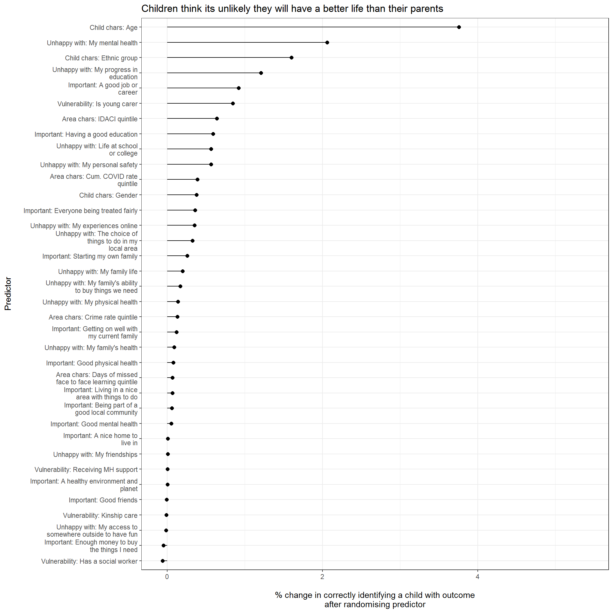

Follow us



Overall predictive power  Odds ratios
Table below below presents odds ratios for each predictor in the model after controlling for all other predictors includedOverall predictive power  Odds ratios
Table below below presents odds ratios for each predictor in the model after controlling for all other predictors included